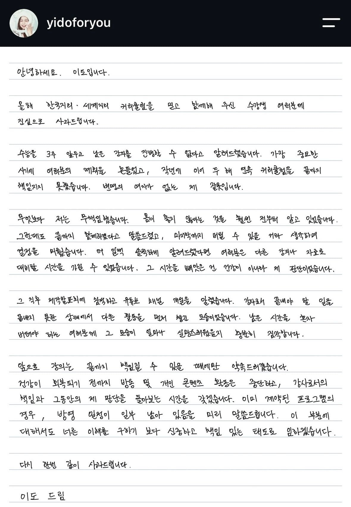

안녕하세요. 이도입니다.
올해 한국지리·세계지리 커리큘럼을 믿고 함께해 주신 수강생 여러분께 진심으로 사과드립니다.
수능을 3주 앞두고 남은 강의를 진행할 수 없다고 알려드렸습니다. 가장 중요한 시기에 여러분의 계획을 무너뜨렸고, 작년에 이어 두 해 연속 커리큘럼을 끝까지 책임지지 못했습니다. 변명의 여지가 없는 제 잘못입니다.
무엇보다 저는 무책임했습니다. 몸이 좋지 않다는 것을 훨씬 전부터 알고 있었습니다. 그럼에도 끝까지 함께하겠다고 말씀드렸고, 마지막까지 버틸 수 있을 거라 생각하며 일정을 미뤘습니다. 더 일찍 솔직하게 알려드렸다면 여러분은 다른 강의와 자료로 대비할 시간을 가질 수 있었습니다. 그 시간을 빼앗은 건 전적으로 제가 판단이었습니다.
그 직후 제작발표회에 참석하고 유튜브 배경을 개설을 알렸습니다. 강사로서 끝내야 할 일을 끝내지 못한 상태에서 다른 활동을 먼저 챙긴 모습이었습니다. 남은 시간을 혼자 버텨야 하는 여러분께 그 모습이 얼마나 실망스러웠을지 충분히 짐작합니다.
앞으로 강의는 끝까지 책임질 수 있을 때에만 약속드리겠습니다.
건강이 회복되기 전까지 방송 및 개인 콘텐츠 활동은 중단하고, 강사로서의 책임과 그동안의 제 판단을 돌아보는 시간을 갖겠습니다. 이미 계약된 프로그램의 경우, 방송 일정이 일부 남아 있음을 미리 말씀드립니다. 이 부분에 대해서도 너른 이해를 구하기보다 신중하고 책임 있는 태도로 임하겠습니다.
다시 한번 깊이 사과드립니다.
이도 드림
'앞으로 강의는 끝까지 책임질 수 있을 때에만 약속드리겠습니다.' 이 대목에서 추후 강의할 의사가 있다고 느껴지는데 이거 나만 불편하냐??